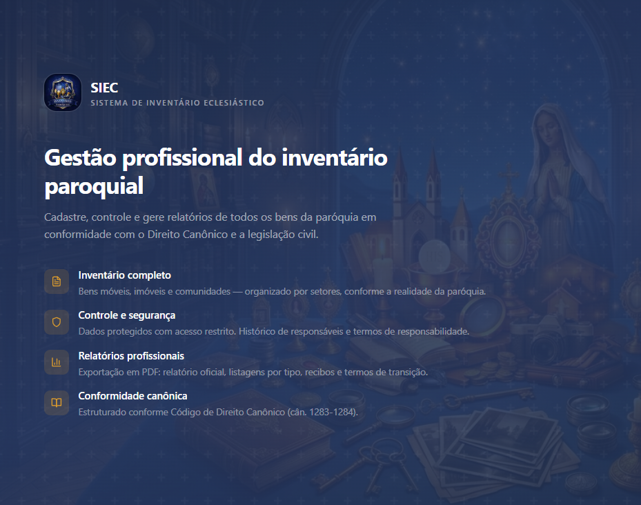
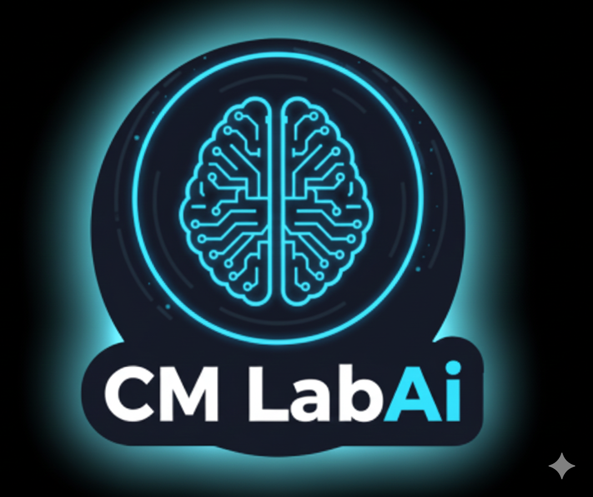

Desenvolvedor Full Stack · Minas Gerais, Brasil
Desenvolvo sistemas web de ponta a ponta com Java, Node.js, React e Angular, e integro IA aos sistemas com LangChain, LangGraph, MCP e RAG.
Hoje trabalho na Code Square com CRMs, integrações e automações. Formado em Sistemas de Informação (2026).
Sou Desenvolvedor Full Stack há mais de 2 anos. Trabalho desde a modelagem dos dados até a interface: back-end com Java (Spring Boot) e Node.js (NestJS), front-end com React, Next.js, TanStack e Angular.
Nos últimos projetos, passei a integrar IA aos sistemas: uso LangChain e LangGraph para orquestrar agentes, tool calling e MCP para a IA executar ações no sistema, RAG para responder com dados da empresa e engenharia de prompt para manter as respostas consistentes.
No dia a dia, cuido da qualidade do que entrego: código revisado, testes, versionamento com Git e pipelines de CI/CD. Também uso ferramentas de IA no desenvolvimento, como Claude Code e Cursor, para ganhar velocidade sem abrir mão da revisão.
APIs REST com Spring Boot e NestJS, autenticação, regras de negócio e bancos relacionais.
Interfaces responsivas com React, Next.js, TanStack e Angular, conectadas às APIs.
LLMs ligados aos dados do sistema com LangChain, LangGraph, MCP, tool calling e RAG.
Sistemas multitenant, modelagem de dados e integração com APIs externas e de governo.
Projeto da Code Square para o cliente Carros Auto Mall
Atuei no desenvolvimento do ERP automotivo e na integração do CRM com atendimento via WhatsApp, incluindo LangChain para apoio de IA e análise de relatórios.
Projeto da Code Square · em desenvolvimento
Atuo no desenvolvimento do módulo de CRM da plataforma Homeet: clientes e leads, funil comercial e tarefas em Kanban.

Projeto pessoalInventário do patrimônio de paróquias
Cadastro de bens com fotos e documentos, importação de NF-e, QR Code por bem, álbum em PDF e vários usuários com permissões por papel.

Projeto pessoalFerramentas de IA generativa
Criação de textos, transcrição de áudio e geração de conteúdo usando modelos de linguagem.
Integração de CRM com atendimento via WhatsApp e IA (LangChain) para a Carros Auto Mall e desenvolvimento do módulo de CRM do Homeet.
Sistema regulatório multitenant com integração ao Outlook, motor de Nota Fiscal integrado ao ADN/SERPRO com certificado A1 e consulta de contratos públicos.
Automação da extração de cheques e extratos bancários com Selenium WebDriver e Spring Boot.
ERP de gestão automotiva com módulo de garagem e módulo de mensagens no WhatsApp com IA em NestJS (IA Zap).
O jeito mais rápido de falar comigo é por e-mail ou LinkedIn.